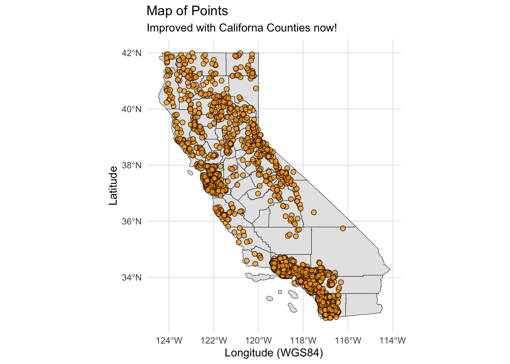
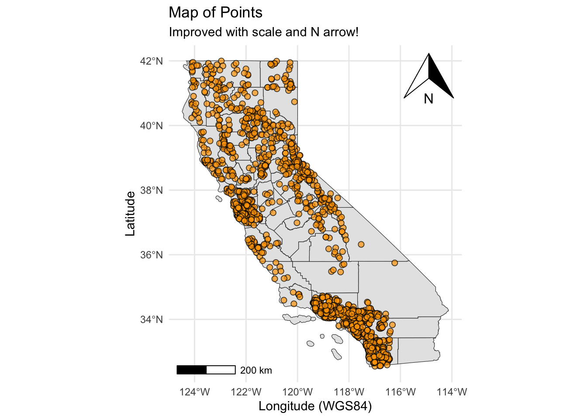
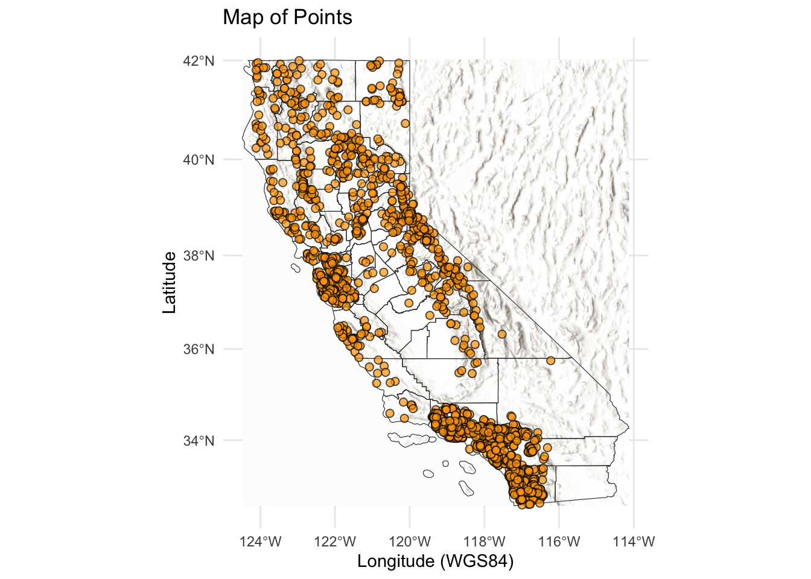

Make Maps
Load Libraries
We will use the following in this tutorial:
library(dplyr)
library(sf)
library(mapview)
library(ggplot2)
library(ggspatial)
library(tigris)Let’s take the same data and learn how to explore/make a few simple maps. There are some excellent spatial resources in the R universe, so we are only going to show a few basics. For more, definitely check out these spatial/mapping resources:
Import the Data
Use the same dataset we’ve been working with in previous lessons. If you are playing along at home, make sure to install/load libraries above.
Make Data Spatial
Now we have data, which as a spatial component. That is, we can use the latitude and longitude columns to map our data. This could be done by simply plotting points with x and y as latitude and longitude, however, if we wanted to do spatial analysis, or utilize the myriad of spatial mapping options in R, we need these data to have a spatial format. For vector (points, lines, polygons) data, the most stable and easiest option is to use the {sf} package and create a simple features data frame. Let’s do that after we talk about projections!
Projections/Transformations
Spatial data is tricky, because different parts of the world work in different “datum” or “projections”. One way to describe how these projections work is to imagine draping a square tablecloth over a round ball (Earth). The tablecloth isn’t quite big enough to cover the whole globe, so near the edges of the tablecloth there’s stretching or wrinkling of your square. At the center of the tablecloth there’s very little stretching, and that’s the most accurate spot from a spatial perspective. When working with spatial data, we want a projection that is going to give us the least amount of stretching for the location/region we’re working in.
A few common projections used in California for state/federal work:
Convert to {sf}
To leverage all the spatial power R provides, we will use the {sf} package, which provides a full suite of functionality for spatial analysis of vector data. We need to use st_as_sf() to convert our data frame to a simple feature (spatial) object. As part of that we need to specify the coordinate reference system (crs=) and coords columns.
If all goes well, we should end up with a new geometry column, which contains our projected spatial data in a single column. This applies to point, line, or polygon data, there will always be one geometry column with the spatial information. And it will stick with the data!

Tip📣 Raster Data
We simply don’t have time to cover all the things, but if you work with raster data, the best recommended all-in-one package to use is {terra}.
Simple Map
We can start by using the plot() function. Here we are actually using a modified plot() function from the {sf} package, to handle the spatial data.
Interactive Maps
Another amazing tool to add to the repertoire is the {mapview} package. It’s very easy to use, and is a great option for exploring your data. Make sure we have installed and loaded the package, and then give it a try.
ggplot Maps
We’ve used {ggplot2} in the previous lessons, here we build it out a bit more and add a our spatial data. Great news, we can use geom_sf() to plot any {sf} data in our ggplot!
Tip📣 Why no
aes()?
geom_sf() automatically detects and uses the geometry column in the {sf} class data frame. So we don’t need to specify an x or y. However, we can certainly map different variables to other aes() options, like aes(fill=NAME) to map a unique color to each CA county name!
Fancy Maps
The following sections show some additional options you can add to your maps without too much hassle (hopefully!)
Getting Boundaries
A great part of maps it having some easy boundaries or delineations that help locate your site or location. One great option is the {tigris}, which allows users to directly download and use TIGER/Line shapefiles from the US Census Bureau. This includes roads, counties, states and more. Let’s download county boundaries for California and use them in our map.
# get counties in CA
ca_cnty <- tigris::counties(state="CA", progress_bar=FALSE)
# what projection are they in?
sf::st_crs(ca_cnty)
# what projection was our xy_sf data in?Now we can plug this straight into our ggplot map from before. note, the order we add the layers into ggplot matters. Try changing them around to see what things look like!
nicemap_w_cnty <-
ggplot() + # set up the framework
# add our county outlines as the base
geom_sf(data = ca_cnty, color="gray20", lwd=0.2) +
geom_sf(data=xy_sf, fill="orange", pch=21, alpha=0.7, size=2)+
labs(x="Longitude (WGS84)", y="Latitude", title="Map of Points", subtitle="Improved with Californa Counties now!") +
theme_minimal() # check out the many themes in ggplot!
nicemap_w_cnty
Adding North Arrow & Scale Bars
A common bit of polish on a map to make it publication ready is to include a scale bar and north arrow or compass. The {ggspatial} package makes this easy in ggplot. Let’s build on our fancy map.
nicemap_w_scales <-
ggplot() +
geom_sf(data = ca_cnty, color="gray20", lwd=0.2) +
geom_sf(data=xy_sf, fill="orange", pch=21, alpha=0.7, size=2)+
labs(x="Longitude (WGS84)", y="Latitude", title="Map of Points", subtitle="Improved with scale and N arrow!") +
theme_minimal() +
ggspatial::annotation_north_arrow(location = "tr") +
ggspatial::annotation_scale(location = "bl")
nicemap_w_scales
basemaps
Finally, one of the cool options to make your map really shine, is adding a basemap. This does require some extra work, but adding code here so you can see how it’s done for a future map! Notice here we need to leverage a few packages we haven’t used yet, including {basemaps}, {terra}, and {tidyterra}. I’ve found this approach is most stable across platforms, but does require a little extra work to get it “map-ready”.
library(basemaps)
library(terra)
library(tidyterra)
# set the default map type...there are many!
set_defaults(map_service = "esri", map_type = "world_hillshade")
# note we need to transform to this projection for ease of use
ca_base <- basemaps::basemap_terra(st_transform(ca_cnty, 3857))Loading basemap 'world_hillshade' from map service 'esri'...# now plot
nice_basemap<-
ggplot() +
# add the base map first! we can change alpha here too
tidyterra::geom_spatraster_rgb(data=ca_base) +
# now county layer
geom_sf(data = ca_cnty, fill="transparent", color="gray20", lwd=0.2) +
# now points
geom_sf(data=xy_sf, fill="orange", pch=21, alpha=0.7, size=2)+
labs(x="Longitude (WGS84)", y="Latitude", title="Map of Points") +
theme_minimal()
nice_basemap
That’s a lot of options! Hope you give some a try and once you make one map, it’s tons of fun to make more!